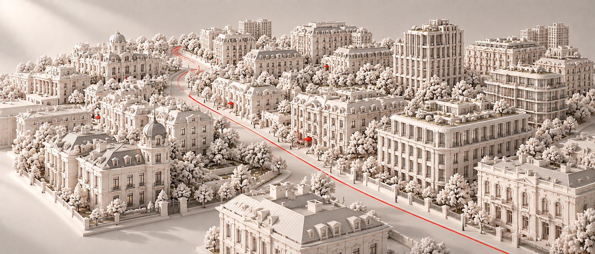
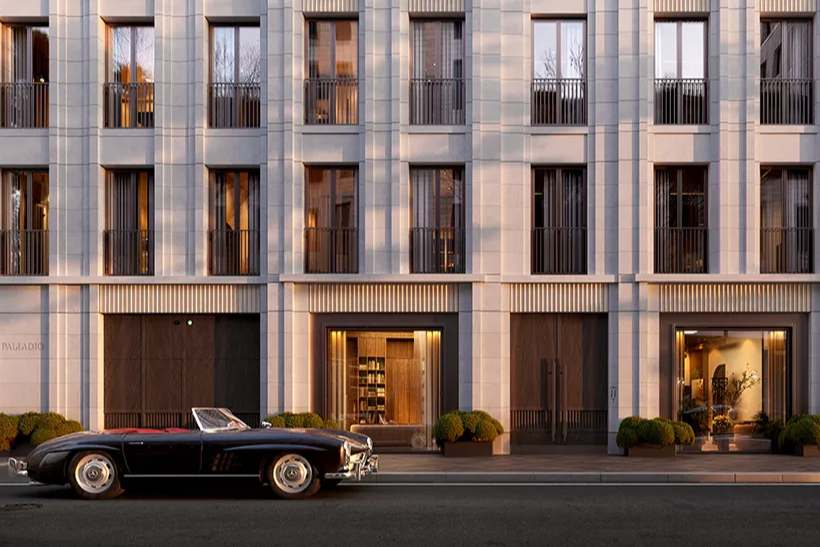
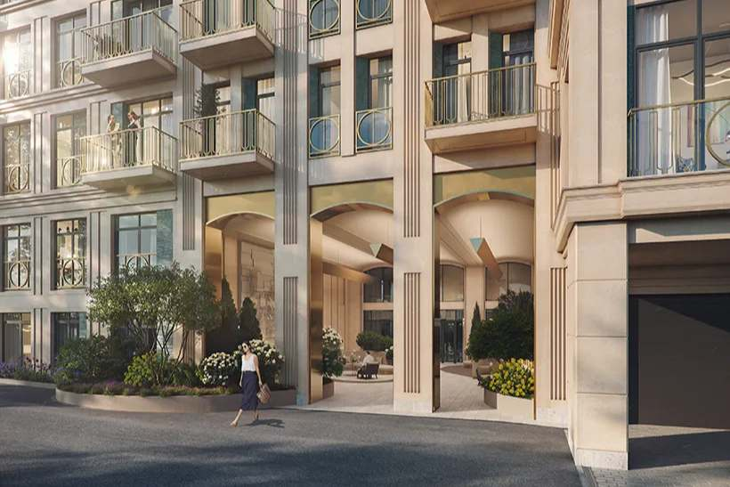

Район · перепроверено 24 сентября 2026
Остоженка
На заметку: формально Остоженка — часть Хамовников, и отдельно её не считает ни один открытый источник. Поэтому цифры по району здесь почти ничего не говорят. Считать приходится по домам — и между соседними переулками метр отличается почти вдвое.

Откуда цифры
Один район, четыре калькулятора
| Кто считал | Что считал | Цена метра |
|---|---|---|
| «Инком-Недвижимость», июнь 2026 | всё вторичное жильё Хамовников | 790 тыс ₽ |
| bnMAP.pro, июль 2026 | все новостройки Хамовников | 2,8 млн ₽ |
| NOTA, ЦИАН 24 сентября 2026 | 22 клубных дома Остоженки и Пречистенки | вторичка — 2,09 млн ₽, у застройщиков — 3,37 млн ₽ |
| NOTA, ЦИАН 24 сентября 2026 | самый дорогой новый дом — Лё Дом | 4,53 млн ₽ у застройщика |
Остоженку открытые источники включают в Хамовники — вместе с Лужниками, Фрунзенской и Плющихой. Средняя по такому району к Остоженке отношения не имеет. Цифры по улице мы считаем сами, по объявлениям.
Красная линия
Семь вещей, на которые здесь стоит смотреть
| Что | Как здесь |
|---|---|
| Место | Переулки против улицы. На самой Остоженке шум и поток, в Зачатьевских и Обыденских переулках тихо — и именно там стоят почти все клубные дома. |
| Вид | Храм Христа Спасителя, Зачатьевский монастырь и река. У храма медиана вторички — 3,52 млн за метр, в Зачатьевских переулках — 1,98. |
| Дом | Две волны. Первая — клубные дома 1998–2012 годов. Потом пауза и новая волна с 2020-х: Обыденский № 1, Лё Дом, Империум, Лёвшинский, 19. |
| Витрина | У шести из двадцати двух домов нет ни одного объявления. Квартиры здесь продают через знакомых и агентов, а не через сайты. |
| Паркинг | Есть не у всех старых домов. В Аннабель паркинг механизированный: 16 мест на 9 квартир. Уточнять, продаётся ли место вместе с квартирой. |
| Выезд | Узкие переулки и набережная: к Садовому кольцу близко, но из переулков в час пик выезжать долго. |
| Сценарий | Тихо, приватно, мало вечерней жизни. Для тех, кому нужна тишина рядом с Кремлём, а не шумный квартал с ресторанами. |

Дом месяца
Обыденский № 1
26 резиденций в 3-м Обыденском переулке у храма Христа Спасителя: квартиры, ситихаусы и виллы, двор-сад, сдан в 2026 году. У застройщика 8 лотов от 650,6 млн, у собственников — 6, от 289 млн. В готовом доме сравнивать сначала стоит с вторичкой, а не с прайсом.
Название Остоженки — от «остожья», заливных лугов у реки, где ставили стога сена. Самые дорогие дома района стоят там, где триста лет назад косили траву.

Без отметки
Три места, где район не проходит собственную линию
Пустая витрина
Noble Row, Opera House, Copper House, Остоженка, 11, Империум, Резиденция на Всеволожском — ни одного открытого объявления. Цену приходится спрашивать напрямую.
Медленный рост
За пять лет вторичка Остоженки выросла на 65 % — хуже всего центра, тогда как Хамовники в целом дали +147 %. Цену тянет новая стройка, а не репутация улицы.
Сроки
Лё Дом переносили на год — с IV квартала 2025-го на IV квартал 2026-го. Allegoria Mosca продают с 2019 года, дом до сих пор не сдан, на вторичке уже есть переуступка.
Чего мы не нашли
Отдельной статистики по Остоженке нет ни у кого — все считают её частью Хамовников. Цен сделок нет в открытом доступе. У шести домов нет даже цен предложения: по ним мы собираем цифры по телефону.
Обложка сгенерирована для NOTA. Источники: «Инком-Недвижимость» (МирКвартир, АЛЛЕ, июнь 2026), bnMAP.pro (РБК Недвижимость, июль 2026), ЦИАН — выгрузка NOTA 24 сентября 2026, проектная декларация Лё Дом (ЕИСЖС), Элитное.ру — характеристики домов; рост за пять лет — из разбора Хамовников.